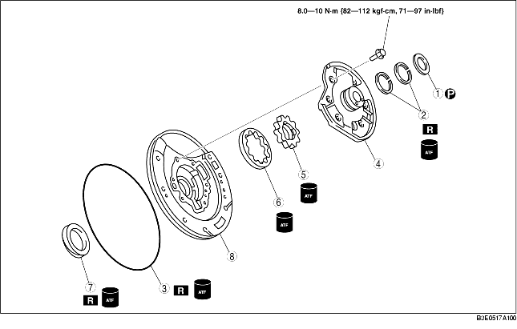

1. Perform the preinspection before disassembly.
(See Oil Pump Preinspection.)
2. Disassemble in the order indicated in the table.
3. Assemble in the reverse order of disassembly.

|
1
|
Thrust washer
|
|
2
|
Seal rings
|
|
3
|
O-ring
|
|
4
|
Oil pump cover
|
|
5
|
Inner rotor
|
|
6
|
Outer rotor
|
|
7
|
Oil seal
|
|
8
|
Oil pump housing
|
• Loosen the mounting bolts evenly in the pattern shown and remove the oil pump cover from the oil pump housing.
• Mark the outer and inner rotors without scratching or denting them, then remove the oil pump housing.
1. Apply ATF to new oil seal and install it onto oil pump housing using the SST.
2. Measure the clearance between the end of the oil pump housing and the outer rotor and inner rotor at four places along their circumferences.
3. Measure the clearance between the outer rotor and the inner rotor.
4. Apply ATF to the outer and inner rotors.
5. Align the marks and install the outer and inner rotors.
6. Install the oil pump flange.
7. Mount the oil pump cover onto the oil pump housing.
8. Tighten the bolts evenly and gradually in the order shown.
9. Apply ATF to new O-ring and install it onto the oil pump housing.
10. Apply ATF to new seal rings and install them onto the oil pump cover.